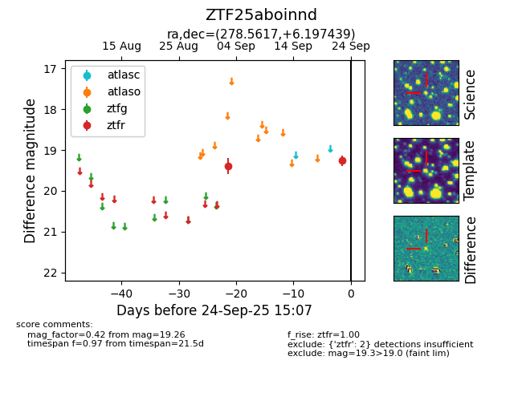

FINK: ZTF25aboinnd
Lasair: ZTF25aboinnd
ALeRCE: ZTF25aboinnd
ZTF25aboinnd (ztf,fink)
equatorial (ra, dec) = (278.5617,+6.19744)
galactic (l, b) = (36.5167,+6.63427)

last ztfr=19.26
2 ztfr detections